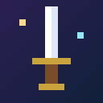

Deskgeon시행일 / Effective date: 2026-10-28
Deskgeon(이하 "이 확장 프로그램")은 브라우저 툴바에서 동작하는 방치형 RPG 게임입니다. 이 확장 프로그램은 개인정보를 수집하거나 판매하지 않으며, 개발자가 운영하는 서버도 없습니다.
이 확장 프로그램이 저장하는 정보는 게임 진행 데이터(세이브) 뿐입니다. 레벨, 골드, 장비, 동료, 설정 등 게임 안의 값으로 구성되며, 이름·이메일·위치·방문 기록 같은 개인정보는 포함되지 않습니다.
drive.appdata).identity 권한은 Google 드라이브 연결을 위한 로그인에만 사용합니다. 로그인으로 받은 접근 토큰은 사용자의 브라우저 안에만 저장되며, 드라이브 세이브 파일을 읽고 쓰는 데만 쓰입니다. 설정에서 언제든 연결을 해제할 수 있습니다.
이 확장 프로그램은 어떤 정보도 개발자나 제3자에게 전송·공유·판매하지 않습니다. 광고, 분석 도구, 추적 코드를 포함하지 않습니다. (토스 미니앱 데스크던전의 랭킹은 아래 9항을 참고하세요.)
이 확장 프로그램은 사용자가 방문하는 웹페이지의 내용이나 방문 기록에 접근하지 않습니다.
zeus08112@gmail.com
안드로이드 앱 데스크던전(com.anyoo.deskgeon)의 세이브는 앱 안의 저장 공간(기기 내부)에 저장되며, 별도 회원가입이나 분석 도구는 없습니다. 다만 다음 정보가 전송됩니다. (1) 랭킹·우편: 아래 9항의 랭킹·우편 서버로 Play 게임즈 플레이어 ID를 기기에서 SHA-256으로 변환한 값, 자동 생성 닉네임, 게임 기록이 전송됩니다. (2) 광고: Google AdMob 광고(배너·보상형)가 있어 광고 ID, 기기·앱 정보, 대략적인 위치(IP 기반) 등 광고 관련 정보가 Google에 전달될 수 있습니다(광고 제거권 구매 시 배너 제외). (3) 결제: 인앱 구매는 Google Play 결제로 처리되며 개발자는 카드 정보를 받지 않습니다. (4) 세이브 코드: 환경설정에서 짧은 세이브 코드(DM6-…)를 만들면 그 세이브 내용이 같은 서버에 30일 동안 보관된 뒤 삭제됩니다. 앱을 삭제하거나 앱 데이터를 지우면 기기의 세이브도 삭제됩니다. 다른 기기로 옮기려면 환경설정의 세이브 코드를 사용하세요. 기기의 Android 백업이 켜져 있으면 Google의 백업 정책에 따라 앱 데이터가 백업될 수 있습니다.
토스(앱인토스) 버전에는 다른 모험가와 기록을 겨루는 랭킹이 있습니다. 랭킹을 위해 다음 정보가 개발자가 운영하는 랭킹 서버(Supabase, 서울 리전)로 전송·저장됩니다.
구글 플레이 버전도 같은 랭킹·우편 서버를 씁니다. 이때 식별자는 구글 Play 게임즈 플레이어 ID를 기기에서 SHA-256으로 변환한 값이며, 원래 ID는 보내지 않습니다. 구글 플레이 버전에는 Google AdMob 광고가 있어 광고 ID 등 광고 관련 정보가 Google에 전달될 수 있고(광고 제거권 구매 시 배너 제외), 결제는 Google Play 결제로 처리됩니다.
아레나를 이용하면 아레나 점수·전적·전투력(역대 최고층으로 계산)과 대결 기록(상대 닉네임, 승패)도 같은 서버에 저장되며, 시즌 보상은 같은 서버의 우편으로 지급됩니다.
이 정보는 랭킹·아레나와 기록 카드를 보여 주는 데만 쓰이며, 다른 이용자는 닉네임·기록·기록 카드를 볼 수 있습니다. 랭킹 기록과 보관된 세이브 삭제를 원하면 아래 연락처로 닉네임을 알려 주세요.
Deskgeon ("the extension") is an idle RPG game that runs in the browser toolbar. The extension does not collect or sell personal information, and the developer operates no servers.
The extension stores only game progress data (the save): in-game values such as level, gold, gear, allies and settings. It contains no personal information such as name, email, location or browsing history.
drive.appdata).The identity permission is used only to sign in for the Google Drive connection. The access token is kept only in your browser and is used only to read and write the Drive save file. You can disconnect at any time in the settings.
The extension does not send, share or sell any information to the developer or any third party. It contains no ads, analytics or tracking code. (For the ranking in the Toss mini app, see section 9.)
The extension does not access the content of web pages you visit or your browsing history.
zeus08112@gmail.com
The save of the Android app Deskgeon (com.anyoo.deskgeon) is stored in the app's private storage on your device, and there is no account sign-up or analytics. The following is sent, however. (1) Ranking and mail: your Google Play Games player ID converted with SHA-256 on your device, an auto-generated nickname and game records go to the ranking and mail server described in section 9. (2) Ads: the app shows Google AdMob ads (banner and rewarded), so advertising data such as the advertising ID, device and app information and approximate (IP-based) location may be shared with Google (no banner after buying the ad-free pass). (3) Purchases: in-app purchases are processed by Google Play Billing; the developer never receives card details. (4) Save codes: if you create a short save code (DM6-...) in Settings, that save is kept on the same server for 30 days and then deleted. Uninstalling the app or clearing its data deletes the save on your device. To move to another device, use the save code in Settings. If Android backup is on, app data may be backed up by Google under its backup policy.
The Toss (Apps in Toss) version has a ranking. For it, the following is sent to and stored on the developer's ranking server (Supabase, Seoul region):
If you use the Arena, your arena score, record, power (computed from your best floor) and match history (opponent nickname, win/loss) are also stored on the same server, and season rewards are delivered through the same server's mail.
The Google Play version uses the same ranking and mail server. Its identifier is your Google Play Games player ID converted with SHA-256 on your device; the original ID is never sent. The Google Play version shows Google AdMob ads, so advertising data such as the advertising ID may be shared with Google (no banner after buying the ad-free pass), and purchases are processed by Google Play Billing.
This is used only to show the ranking and record cards; other players can see your nickname, records and record card. To have your ranking record and stored save deleted, send your nickname to the contact below.